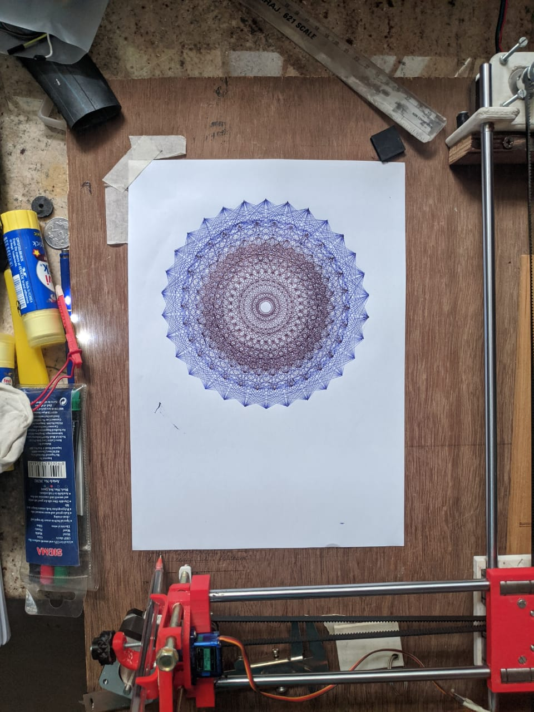
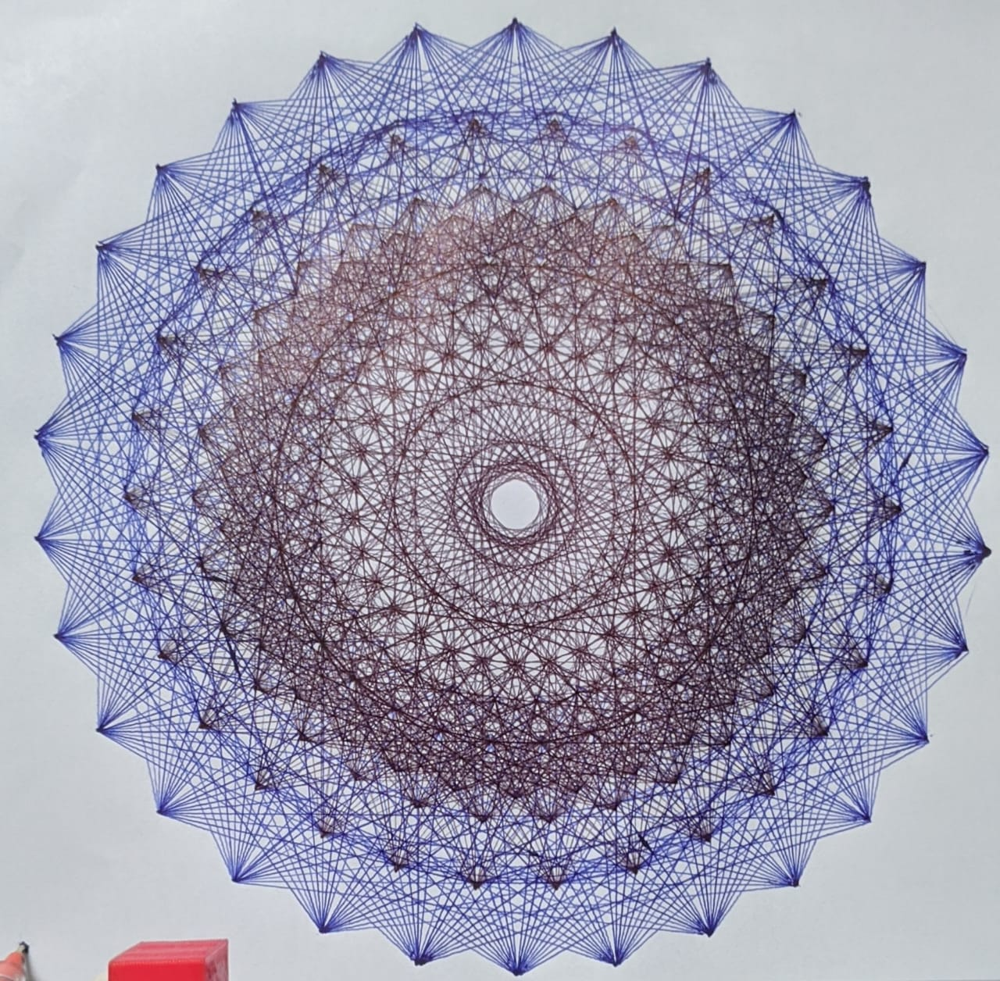
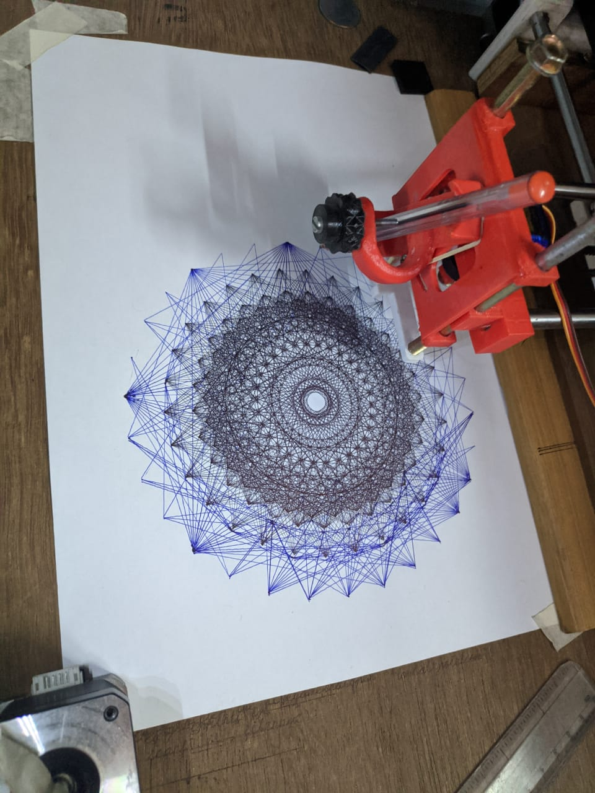
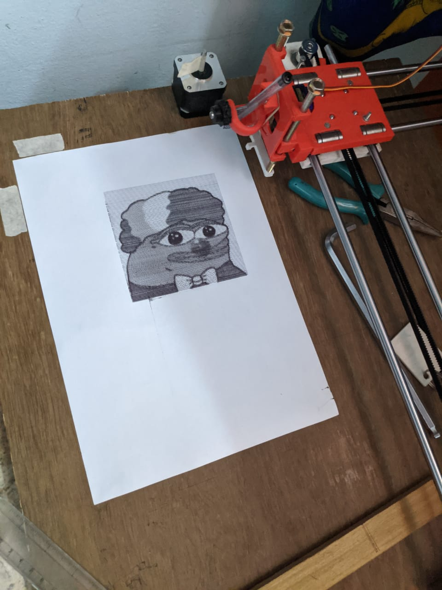
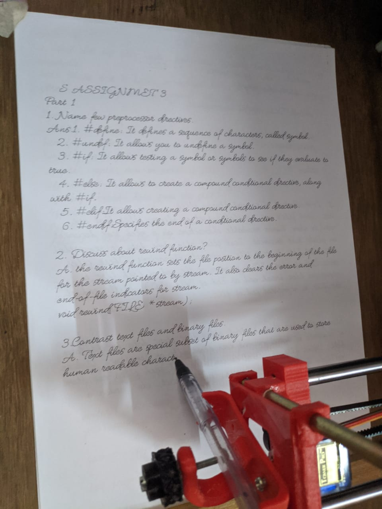
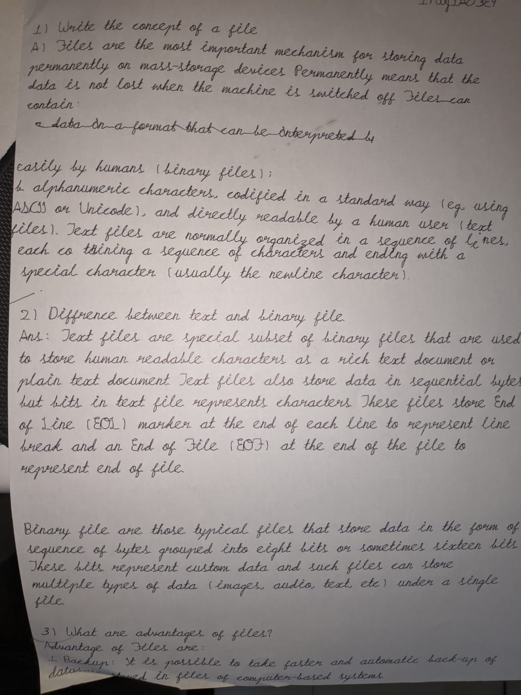
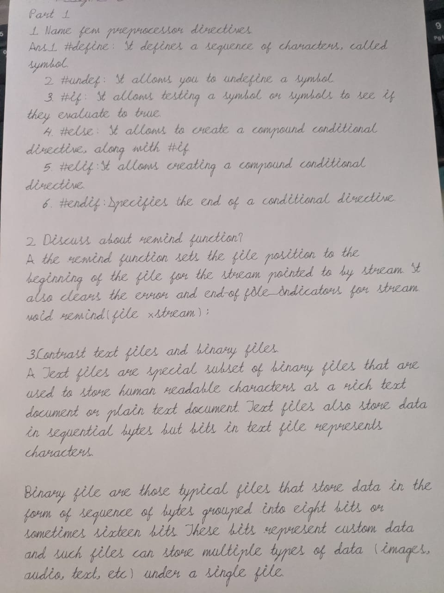
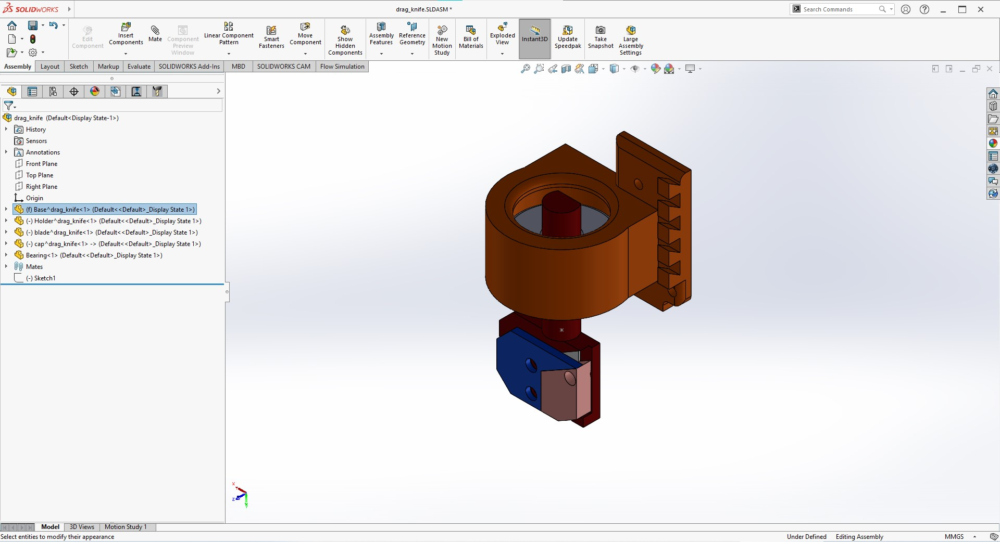
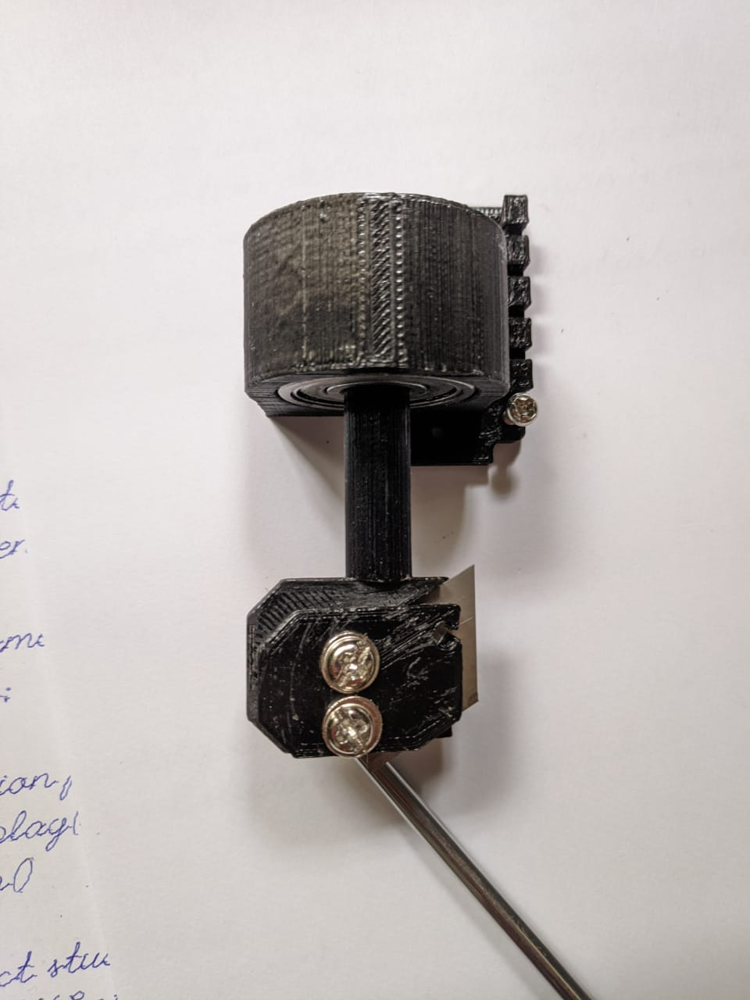

Pen Plotter
As a child, I despised writing and fantasised about a machine that could do it for me; however, after receiving my 3D printer in 2019, I learned about "pen plotters" and discovered that at college, I am required to write far too much for the sake of mediocre grades. In December 2019, I finished modifying the design of H-Bot originally made by Dr Windell Oskay (https://www.evilmadscientist.com/). I tested the concept of the gcode on my 3d printer by mounting a pen on it and, surprisingly, it worked very well. I started one of my lab observation experiments with this and it went unnoticed.
Later, I wanted to make my dedicated pen plotter so I could start writing Lab records with it. I gathered all the parts from Koti. There are several guides on the internet for free to build your own pen plotter.
Here are some examples of penplotter of drawings and writing done by my plotter. The first lettce is E8, which is any of several closely related exceptional simple Lie groups, linear algebraic groups or Lie algebras of dimension 248.




Exciting part
Having a homework writing machine is every childs dream which I could accomplish thanks to 3D printers and generous people on internet who upload and maintian the software of these.
But this software had one major flaw that I had to fix on my own and could do it during the 2020 COVID pandemic. I had to digitise my own handwriting that looks like my handwriting. The available fonts that could be used for this looked like they came straight out of a printer.



I do not consider this cheating, as I built my own tool to fix my problem. There is a massive loophole in the system, which needs to be fixed rather than calling me a cheater for cracking a loophole.
Toolchanger
Being able to use only one tool is boring, so one day I was looking at other people's CNCs and found something called a "drag knife." Later, after looking more, I figured I could design it myself on SolidWorks. I started by gathering screws, blades, and an ordinary ball bearing so I could start designing it in SolidWorks.


The gcode needs refinement for this drag to function as intended which I will solve later in future.